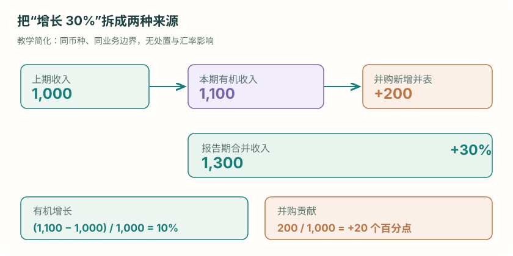
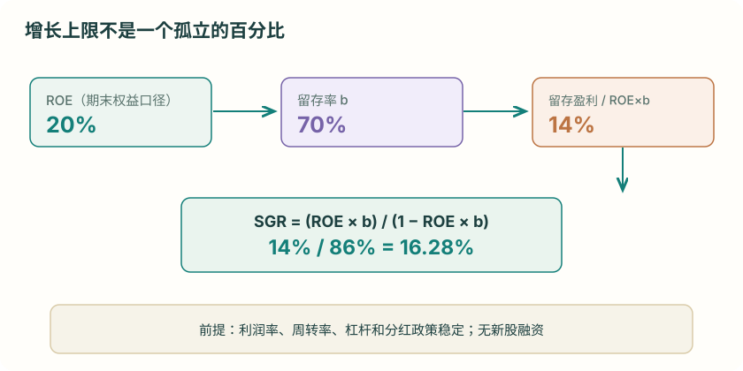

成长能力分析：增长来源、资本需求与价值创造
营收增长 30% 不一定意味着核心业务增长 30%。如果增长来自并购、赊销和高额资本投入，还要回答：它能否转化为现金，新增资本能否赚到高于资本成本的回报？
增长越快，企业价值就越高吗？
设一家企业上期收入 1,000 万，本期收入 1,300 万，表面同比增长 30%。同一期间，企业为了扩产新增投入 500 万，经营现金流却从 120 万降至 20 万。此时“增长 30%”只描述收入规模变化，尚未说明增长是否来自原有业务、是否产生利润、是否消耗更多营运资本，以及新增投资能否获得足够回报。
财务分析的目标不是奖励增长本身，而是判断企业能否以可持续的资本投入获得超过资本成本的回报。增长可以增加价值，也可以在低回报项目上越扩越亏。CFA 的财务分析框架也将盈利增长、现金生成与资本回报放在同一决策问题中，而不是把收入增速当成最终答案。

拆开收入增长：内生、并购、价格、销量与汇率
收入增长至少应拆成四类驱动：原有业务销量变化、售价与产品组合变化、并购或处置改变合并范围、汇率与其他口径变化。它们的经济含义不同。价格上涨可能提升收入却损害销量；高价产品占比提高会抬升平均售价；并购并表会扩大集团规模，却不等于原有团队获得了新客户。
假设上期同口径收入 1,000 万，本期报告收入 1,300 万，其中新增并购主体贡献本期并表收入 200 万。简化的同口径收入为 1,100 万，则报告增长率为 30%，有机增长率为 10%，并购贡献相当于上期收入的 20 个百分点。实务中还必须调整处置业务、汇率、会计期间差异、内部交易抵销，以及收购后纳入合并报表的实际月份。
并购后商誉增加是一个需要追踪的会计结果，不是并购质量的单独证明。应阅读企业合并附注，核对购买日、合并成本、可辨认资产负债、公允价值调整和被购买方纳入合并报表的期间。财政部《企业会计准则第20号——企业合并》明确区分同一控制与非同一控制下企业合并的计量处理；不能把所有并购收入都简单当作“买来的增长”而不作期间口径调整。
增速、复合增长与基数效应
单年同比容易受低基数、价格周期、一次性订单和业务边界影响。跨多个年度观察时，可以用复合年增长率（CAGR）把起点和终点折算成等效年复合速度，但它抹平了中间波动，不代表每年都按该速度增长。
当起点或终点为零、负数时，CAGR 可能没有经济解释，不应强行计算。利润增长还要拆分扣非与非经常性损益、少数股东损益、税率和股本变化。净利润增长 20% 而加权平均股数增长 25%，每股收益未必增长；总量指标与每股指标应分别展示。
建议至少并列查看收入、毛利、营业利润、归母净利润、扣非归母净利润、经营现金流、资本开支与每股指标。若利润增长明显快于收入，继续检查毛利率、费用率、减值、补助、资产处置和研发资本化等变化，而不是先假定经营杠杆改善。
可持续增长率：模型边界比公式更重要
可持续增长率（SGR）描述在特定假设下，企业不增发普通股、维持既定财务杠杆与经营政策时，依靠留存收益可支持的增长速度。它不是监管阈值，也不是企业的绝对增长上限。
一种常见模型写法为：
其中 (b) 为留存率，即 1−股利支付率。若 ROE=20%、留存率=70%，则 ROE×b=14%，模型 SGR=14%/(1−14%)≈16.28%。这个写法将 ROE 定义为净利润除以期末权益。若分析者采用期初权益 ROE、平均权益 ROE，或使用简化近似式 (ROE×b)，结果会不同；必须标注口径，不可混用。

若实际增长高于模型 SGR，可能来自提高杠杆、增发股份、改变分红、提高利润率或资产周转率，也可能是期间口径和并购变化。它提示你追问融资来源，不足以直接断言增长不可持续。
增长是否创造价值：增量回报与资本需求
价值创造的关键不在收入增速，而在新增投入能否产生足够的增量经营回报。一个简化的增量投入资本回报率为：
若新增投入资本回报率长期低于企业适用的加权平均资本成本（WACC），增长可能扩大经济利润的负值；若高于资本成本，增长才可能增加经济价值。实务要用可比的税后经营利润与平均投入资本，剔除收购、处置、一次性项目和会计口径变更的影响。
成长还会消耗现金：收入增加可能带来应收账款、合同资产和存货上升；产能扩张带来资本开支；客户集中与供应链议价能力影响现金转换周期。把第10章的周转天数、第12章的现金流质量和第13章的 ROE 驱动连起来，才能回答增长是否需要不断外部融资。
企业因预收款模式而出现负现金转换周期，可能在扩张期仍产生经营现金流；重资产企业在新产线投产前可能暂时 FCF 为负。不能只凭 FCF 单年为负判断增长失败，也不能凭收入增长判断资本效率良好。
成长与融资容量工作台
调整假设，即时复算
教学虚构数据。模型假设无处置与汇率影响；并购贡献是本期新增并表收入的简化扣除，不替代完整同口径重述。ROE 与留存率使用百分数输入。
将并购新增并表收入从 200 改为 0，可观察报告增长与有机增长的差异；再降低留存率，观察模型 SGR 如何下降。请记住：这只是融资容量模型，不是增长预测。
形成可复核的成长结论
成长分析的工作底稿应同时列示：报告增长率、有机增长的调整方法、并购并表月份、量价拆分、扣非利润与每股指标、营运资本增量、资本开支、ROIC 与资本成本、融资来源和分红政策。对无法从公开披露验证的拆分项，应标为估计或不可得，不要伪造精确的“有机增长贡献”。
自测：报告收入增长30%，其中并购新增并表收入200，上期同口径收入1000，简化有机增长率是多少？
本期同口径收入为1300−200=1100，有机增长率=(1100−1000)/1000=10%。报告增长30%并不等于原有业务增长30%。
结论：增长要经过来源拆分、资本需求分析、现金验证和增量回报检验，才有资格成为价值创造的证据。
依据与适用边界
本章金额、公司与计算案例均为教学虚构；公式属于分析者使用的派生指标，不是统一法定评价阈值。实际判断须结合报告期、合并范围、会计准则和原始附注。